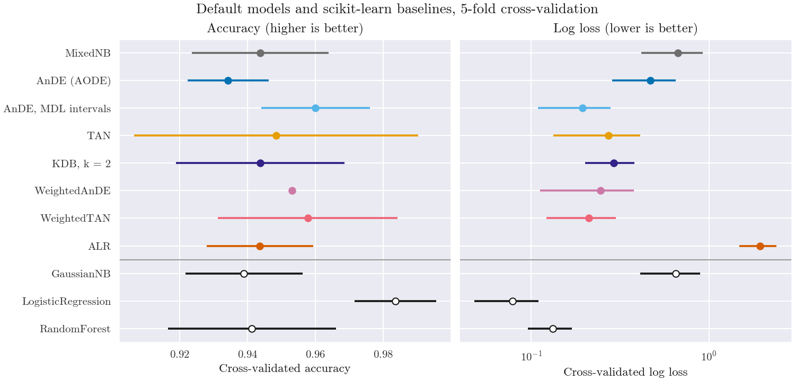
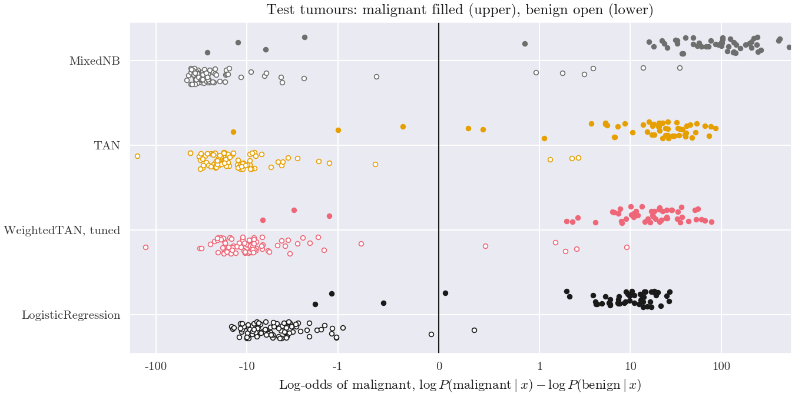

Note
Go to the end to download the full example code.
A table of continuous measurements: what to expect#
The models of the library are built for categorical and mixed tables whose attributes act on the class together; the tutorial shows them on such a table. This example shows the other end: the breast cancer data that ship with scikit-learn, 30 continuous measurements, many of which repeat one another, and a class that a linear model separates almost perfectly. It shows:
how the models type a pandas DataFrame with numeric, text,
categoryand boolean columns;how they compare with scikit-learn baselines by cross-validation, on accuracy and on log loss: here logistic regression is the best model;
how a supervised discretization and the weights of
WeightedTANnarrow the gap, and what the weights discount;why log loss punishes naive Bayes on such data, on a held-out test set.
The models are fitted on the DataFrame as it is, without an encoder, a scaler or a discretizer in front.
# Author: The scikit-bayes Developers
# SPDX-License-Identifier: BSD-3-Clause
The data#
The table has 569 tumours, described by 30 continuous measurements of their
cell nuclei, and the class is malignant or benign. Clinical and
laboratory tables usually also hold coded fields, so three such columns are
added here. They are derived from the measurements, not recorded in the
original study:
texture grade, strings: a"low","medium"or"high"mean texture, which replaces the measurement;symmetry class, a pandascategory: four classes of mean symmetry,ItoIV, which replace the measurement;many concave points, a boolean: a worst number of concave points above 0.15.
The table has no missing values; the models do not take them, and Pipelines and model selection with scikit-learn shows how to impute them in a pipeline. A quarter of the rows is set aside for the final evaluation.
import matplotlib.pyplot as plt
import numpy as np
import pandas as pd
from matplotlib.ticker import NullLocator, StrMethodFormatter
from sklearn.datasets import load_breast_cancer
from sklearn.model_selection import train_test_split
data = load_breast_cancer(as_frame=True)
X = data.data.copy()
y = data.target_names[data.target] # The class names, as strings
texture = X.pop("mean texture")
X["texture grade"] = np.select([texture < 16, texture < 21], ["low", "medium"], "high")
X["symmetry class"] = pd.cut(
X.pop("mean symmetry"), [0, 0.16, 0.18, 0.2, 1], labels=["I", "II", "III", "IV"]
)
X["many concave points"] = X["worst concave points"] > 0.15
X_train, X_test, y_train, y_test = train_test_split(
X, y, test_size=0.25, stratify=y, random_state=0
)
print(X.dtypes.value_counts().to_string())
X_train.iloc[:5, -4:]
float64 28
str 1
category 1
bool 1
A first model#
MixedNB, naive Bayes for mixed data, takes the DataFrame
and gives the probability of each class.
from skbn import MixedNB
nb = MixedNB().fit(X_train, y_train)
pd.DataFrame(nb.predict_proba(X_test[:3]), columns=nb.classes_).round(4)
Each column was typed from its dtype and values: the measurements are
Gaussian, the strings and the category categorical, and the boolean
Bernoulli (two values). feature_types_ holds column indices and
categories_ the labels of each categorical column, coded in this
sorted order. The user guide gives the rule, and how
to declare the types instead.
gaussian 28: mean radius, mean perimeter, mean area
categorical 2: texture grade, symmetry class
bernoulli 1: many concave points
[array(['high', 'low', 'medium'], dtype=object), array(['I', 'II', 'III', 'IV'], dtype=object)]
Comparing the models#
The models follow the scikit-learn API, so
cross_validate() scores them like any
other estimator: here by 5-fold cross-validation on the training rows, on
accuracy and on log loss, which also judges the probabilities (lower is
better). Every model keeps its default parameters; a second AODE
discretizes every continuous attribute into MDL intervals instead of
giving it a Gaussian conditional (continuous_children="discretized").
Three scikit-learn baselines need encodings that the library does
without: GaussianNB sees the numeric columns
only, LogisticRegression standardized
measurements and one-hot encoded labels, and
RandomForestClassifier integer codes of the
labels.
from sklearn.compose import make_column_selector, make_column_transformer
from sklearn.ensemble import RandomForestClassifier
from sklearn.linear_model import LogisticRegression
from sklearn.model_selection import StratifiedKFold, cross_validate
from sklearn.naive_bayes import GaussianNB
from sklearn.pipeline import make_pipeline
from sklearn.preprocessing import OneHotEncoder, OrdinalEncoder, StandardScaler
from skbn import ALR, KDB, TAN, AnDE, WeightedAnDE, WeightedTAN
numeric = make_column_selector(dtype_include="number")
labels = ["texture grade", "symmetry class", "many concave points"]
only_numeric = make_column_transformer(("passthrough", numeric))
one_hot = make_column_transformer(
(StandardScaler(), numeric), (OneHotEncoder(), labels)
)
codes = make_column_transformer((OrdinalEncoder(), labels), remainder="passthrough")
models = {
"MixedNB": MixedNB(),
"AnDE (AODE)": AnDE(),
"AnDE, MDL intervals": AnDE(strategy="mdlp", continuous_children="discretized"),
"TAN": TAN(),
"KDB, k = 2": KDB(k=2),
"WeightedAnDE": WeightedAnDE(),
"WeightedTAN": WeightedTAN(),
"ALR": ALR(),
"GaussianNB": make_pipeline(only_numeric, GaussianNB()),
"LogisticRegression": make_pipeline(one_hot, LogisticRegression(max_iter=1000)),
"RandomForest": make_pipeline(codes, RandomForestClassifier(random_state=0)),
}
# One colour per model of the library, as in the other examples, and one
# for the three baselines
library = ["#6E6E6E", "#0072B2", "#56B4E9", "#E69F00", "#332288", "#CC79A7", "#EE6677"]
library.append("#D55E00")
colors = dict(zip(models, library))
BASELINE = "#1A1A1A"
cv = StratifiedKFold(n_splits=5, shuffle=True, random_state=0)
scoring = ["accuracy", "neg_log_loss"]
scores = {}
for name, model in models.items():
r = cross_validate(model, X_train, y_train, cv=cv, scoring=scoring)
scores[name] = {"accuracy": r["test_accuracy"], "log loss": -r["test_neg_log_loss"]}
# Mean and standard deviation over the folds
table = pd.DataFrame(scores).T.map(lambda v: f"{v.mean():.3f} ± {v.std():.3f}")
print(table.to_string())
accuracy log loss
MixedNB 0.944 ± 0.020 0.669 ± 0.254
AnDE (AODE) 0.934 ± 0.012 0.468 ± 0.182
AnDE, MDL intervals 0.960 ± 0.016 0.195 ± 0.086
TAN 0.948 ± 0.042 0.272 ± 0.139
KDB, k = 2 0.944 ± 0.025 0.291 ± 0.090
WeightedAnDE 0.953 ± 0.000 0.245 ± 0.133
WeightedTAN 0.958 ± 0.026 0.211 ± 0.089
ALR 0.944 ± 0.016 1.942 ± 0.462
GaussianNB 0.939 ± 0.017 0.652 ± 0.242
LogisticRegression 0.984 ± 0.012 0.079 ± 0.031
RandomForest 0.941 ± 0.025 0.132 ± 0.037
The figure gives the mean and the standard deviation over the five folds.
fig, axes = plt.subplots(1, 2, figsize=(10, 4.8), sharey=True)
names = list(models)[::-1] # The first model at the top
for ax, metric in zip(axes, ["accuracy", "log loss"]):
for i, name in enumerate(names):
color = colors.get(name, BASELINE)
values = scores[name][metric]
fill = "white" if name not in colors else color # Open: the baselines
ax.errorbar(values.mean(), i, xerr=values.std(), fmt="o", c=color, mfc=fill)
ax.axhline(2.5, color="#999999", lw=1) # The library above, the baselines below
ax.set_xlabel(f"Cross-validated {metric}")
axes[0].set_yticks(range(len(names)), names)
axes[1].set_xscale("log")
axes[0].set_title("Accuracy (higher is better)")
axes[1].set_title("Log loss (lower is better)")
fig.suptitle("Default models and scikit-learn baselines, 5-fold cross-validation")
plt.show()

On accuracy the models are hard to tell apart: all lie between 0.93 and
0.96 except LogisticRegression, at 0.984,
and the standard deviations over the folds, up to 0.04, are as large as
the differences. Log loss separates them more. The two naive Bayes models
are the worst calibrated but one (0.67 for MixedNB, 0.65 for GaussianNB):
many measurements repeat each other (the radius, the perimeter and the
area of a nucleus), naive Bayes counts that evidence several times, and
its probabilities are close to 0 or 1, as on the three rows shown above,
so that each of its errors costs much. The models that relax the
independence assumption do better, AODE (0.47), KDB (0.29) and TAN
(0.27), and their weighted versions better still, WeightedAnDE (0.25) and
WeightedTAN (0.21). The Gaussian conditionals are part of the problem:
these measurements are skewed, and AODE on MDL intervals has the best
accuracy (0.960) and the best log loss (0.195) of the library, less than
half that of AODE with Gaussian children. ALR is the
worst, at 1.94, with
defaults that reproduce the protocol of its paper: no penalty on the
weights of its 465 pairs of attributes, here fitted on about 340 rows (the
user guide discusses its parameters). Two
baselines are better than every model of the library on log loss:
logistic regression (0.079) and the random forest (0.132).
Tuning a model#
WeightedTAN keeps the tree and the probabilities of
TAN and learns an exponent weight on each factor, which
can discount the attributes that repeat the evidence of others. The search
chooses how the continuous attributes are discretized to learn the tree
and to act as parents (strategy: bins of equal frequency, or the
supervised "mdlp"), how finely the weights are tied (weight_level)
and the penalty that keeps them close to the generative model
(l2_reg), by log loss on the same folds.
from sklearn.model_selection import GridSearchCV
grid = {
"strategy": ["quantile", "mdlp"],
"weight_level": [1, 2, 3, 4],
"l2_reg": [1, 10],
}
search = GridSearchCV(WeightedTAN(), grid, scoring="neg_log_loss", cv=cv)
search.fit(X_train, y_train)
results = pd.DataFrame(search.cv_results_)
results["log loss"] = -results["mean_test_score"]
columns = ["param_strategy", "param_weight_level", "param_l2_reg", "log loss"]
print(results.sort_values("log loss")[columns].head(6).round(3).to_string(index=False))
param_strategy param_weight_level param_l2_reg log loss
mdlp 2 1 0.146
mdlp 1 1 0.146
mdlp 2 10 0.159
mdlp 1 10 0.159
quantile 2 1 0.161
quantile 1 1 0.166
The supervised discretization helps most: the four best combinations use
"mdlp", and the best one lowers the log loss of WeightedTAN from
0.211 with the defaults to 0.146, close to the random forest (0.132) but
still behind logistic regression (0.079). Levels 1 and 2 tie; they differ
only on the three label columns. The score of the chosen combination is
optimistic, since it was chosen on these same folds; the test set below
gives an unbiased estimate.
What the weights discount#
search.best_estimator_ was refitted on all the training rows. Its tree
joins the measurements of the same quantity: the radius, the perimeter
and the area hang from one another, and so do the compactness, the
concavity and the concave points. feature_weights_ holds the weights
of the conditional of each attribute: 1 is the generative model, and a
weight below 1 discounts the attribute. At weight_level=2 a
continuous attribute has one weight. The table gives the continuous
attributes with the lowest and the highest weights, with their parents in
the tree (parents_).
model = search.best_estimator_
names = np.asarray(X.columns)
gaussian = model.feature_types_["gaussian"]
parents = np.where(model.parents_ < 0, "", names[model.parents_])[gaussian]
weights = [model.feature_weights_[i][0, 0] for i in gaussian]
weights = pd.DataFrame({"parent": parents, "weight": weights}, index=names[gaussian])
weights = weights.sort_values("weight")
pd.concat([weights.head(6), weights.tail(3)]).round(2)
The lowest weights go mostly to attributes that their parent nearly determines, such as the perimeter and the area given the radius. The network sees a continuous parent only through its bin, so their conditionals still repeat the evidence of the parent; the weights remove most of it. A weight above 1 strengthens a conditional that the network underuses. A weight is not an importance: it says how much a conditional is trusted next to the others of this network.
Final evaluation#
The test rows are used once, for four of the models, all fitted on the whole training set.
from sklearn.metrics import accuracy_score, log_loss
final = {
"MixedNB": nb,
"TAN": TAN().fit(X_train, y_train),
"WeightedTAN, tuned": model,
"LogisticRegression": models["LogisticRegression"].fit(X_train, y_train),
}
colors["WeightedTAN, tuned"] = colors["WeightedTAN"]
log_odds = {}
for name, m in final.items():
log_proba = m.predict_log_proba(X_test) # Columns: benign, malignant
log_odds[name] = log_proba[:, 1] - log_proba[:, 0]
wrong = m.predict(X_test) != y_test
print(
f"{name:19s} accuracy {accuracy_score(y_test, m.predict(X_test)):.3f}"
f" ({wrong.sum()} errors) log loss {log_loss(y_test, np.exp(log_proba)):.3f}"
f" largest |log-odds| of an error {np.abs(log_odds[name][wrong]).max():.1f}"
)
MixedNB accuracy 0.930 (10 errors) log loss 0.758 largest |log-odds| of an error 34.8
TAN accuracy 0.958 (6 errors) log loss 0.178 largest |log-odds| of an error 14.2
WeightedTAN, tuned accuracy 0.944 (8 errors) log loss 0.205 largest |log-odds| of an error 9.1
LogisticRegression accuracy 0.972 (4 errors) log loss 0.070 largest |log-odds| of an error 1.8
The tuned WeightedTAN does not keep its lead on these 143 tumours: it makes 8 errors where TAN makes 6, and its log loss, 0.205, is above the 0.178 of TAN. With so few test rows two tumours make that difference, but the cross-validated gain of the search did not carry over here. Logistic regression is again the best, with 4 errors and a log loss of 0.070.
The figure shows why log loss punishes naive Bayes: each point is a test tumour, at the log-odds of malignant that the model gives it, and a point on the wrong side of 0 is an error. The log-odds of MixedNB reach several hundreds, and one of its errors has a log-odds of 34.8, a probability of about \(10^{-15}\) for the true class. The errors of TAN and of WeightedTAN are less extreme (up to 14.2 and 9.1), and those of logistic regression all lie within 1.8 of 0.
On a table like this one, of continuous measurements that a linear function of the attributes separates well, logistic regression is the better choice. The tutorial shows the opposite case, a table of labels whose attributes act together.
fig, ax = plt.subplots(figsize=(9, 4.5))
rng = np.random.RandomState(0)
for i, name in enumerate(final):
color = colors.get(name, BASELINE)
for label, offset, fill in (("malignant", 0.18, color), ("benign", -0.18, "white")):
x = log_odds[name][y_test == label]
jitter = rng.uniform(-0.1, 0.1, len(x))
ax.scatter(x, offset - i + jitter, s=14, color=color, facecolors=fill, lw=0.8)
ax.axvline(0, color=BASELINE, lw=1)
ax.set_xscale("symlog", linthresh=1)
ax.set_xticks([-100, -10, -1, 0, 1, 10, 100])
ax.xaxis.set_major_formatter(StrMethodFormatter("{x:g}"))
ax.xaxis.set_minor_locator(NullLocator())
ax.set_yticks(-np.arange(len(final)), list(final))
ax.set_xlabel(
"Log-odds of malignant, $\\log P(\\mathrm{malignant} \\mid x) - \\log"
" P(\\mathrm{benign} \\mid x)$"
)
ax.set_title("Test tumours: malignant filled (upper), benign open (lower)")
plt.show()

Total running time of the script: (0 minutes 3.018 seconds)